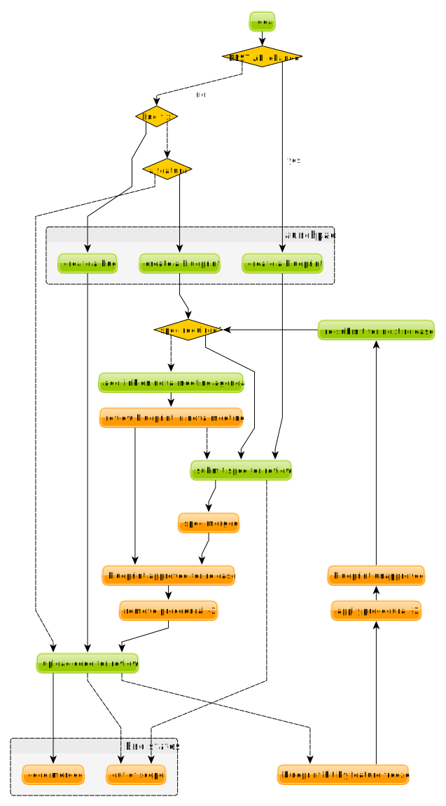

Nova team process¶
Nova is always evolving its processes, but it’s important to explain why we have them: so we can all work to ensure that the interactions we need to happen do happen. The process exists to make productive communication between all members of our community easier.
OpenStack Wide Patterns¶
Nova follows most of the generally adopted norms for OpenStack projects. You can get more details here:
- http://docs.openstack.org/infra/manual/developers.html
- http://docs.openstack.org/project-team-guide/
If you are new to Nova, please read this first: How to get (more) involved with Nova.
Dates overview¶
For Ocata, please see: https://wiki.openstack.org/wiki/Nova/Ocata_Release_Schedule
Feature Freeze¶
Feature freeze primarily provides a window of time to help the horizontal teams prepare their items for release, while giving developers time to focus on stabilising what is currently in master, and encouraging users and packagers to perform tests (automated, and manual) on the release, to spot any major bugs.
The Nova release process is aligned with the development cycle schedule used by many OpenStack projects, including the following steps.
Feature Proposal Freeze
- make sure all code is up for review
- so we can optimise for completed features, not lots of half completed features
Feature Freeze
- make sure all feature code is merged
String Freeze
- give translators time to translate all our strings
- Note: debug logs are no longer translated
Dependency Freeze
- time to co-ordinate the final list of dependencies, and give packagers time to package them
- generally it is also quite destabilising to take upgrades (beyond bug fixes) this late
As with all processes here, there are exceptions. The exceptions at this stage need to be discussed with the horizontal teams that might be affected by changes beyond this point, and as such are discussed with one of the OpenStack release managers.
Spec and Blueprint Approval Freeze¶
This is a (mostly) Nova specific process.
Why we have a Spec Freeze:
- specs take a long time to review and reviewing specs throughout the cycle distracts from code reviews
- keeping specs “open” and being slow at reviewing them (or just ignoring them) annoys the spec submitters
- we generally have more code submitted that we can review, this time bounding is a useful way to limit the number of submissions
By the freeze date, we expect all blueprints that will be approved for the cycle to be listed on launchpad and all relevant specs to be merged. For Ocata blueprints can be found at https://blueprints.launchpad.net/nova/ocata and specs at http://specs.openstack.org/openstack/nova-specs/specs/ocata/index.html
Starting with Liberty, we are keeping a backlog open for submission at all times. Note: the focus is on accepting and agreeing problem statements as being in scope, rather than queueing up work items for the next release. We are still working on a new lightweight process to get out of the backlog and approved for a particular release. For more details on backlog specs, please see: http://specs.openstack.org/openstack/nova-specs/specs/backlog/index.html
There can be exceptions, usually it’s an urgent feature request that comes up after the initial deadline. These will generally be discussed at the weekly Nova meeting, by adding the spec or blueprint to discuss in the appropriate place in the meeting agenda here (ideally make yourself available to discuss the blueprint, or alternatively make your case on the ML before the meeting): https://wiki.openstack.org/wiki/Meetings/Nova#Agenda_for_next_meeting
Non-priority Feature Freeze¶
This is a Nova specific process.
This only applies to low priority blueprints in this list: https://blueprints.launchpad.net/nova/ocata
We currently have a very finite amount of review bandwidth. In order to make code review time for the agreed community wide priorities, we have to not do some other things. In each cycle, milestones are used to bound when certain types of work will be active and reviewed and to avoid crushing the gate with too much code near the end of the cycle.
For example, in the Liberty cycle, we reserved the liberty-3 milestone for priority features and bug fixes and did not merge any non-priority things during liberty-3. This meant that liberty-2 was the “Feature Freeze” for blueprints that were not a priority for the Liberty cycle.
You can see the list of priorities for each release: http://specs.openstack.org/openstack/nova-specs/#priorities
For things that are very close to merging, it’s possible to request an exception for one week after the freeze date, given the patches get enough +2s from the core team to get the code merged. But we expect this list to be zero, if everything goes to plan (no massive gate failures, etc). For history of the process see: http://lists.openstack.org/pipermail/openstack-dev/2015-July/070920.html
Exception process:
- Please add request in here: https://etherpad.openstack.org/p/ocata-nova-non-priority-feature-freeze (ideally with core reviewers to sponsor your patch, normally the folks who have already viewed those patches)
- make sure you make your request before the end of the feature freeze exception period
- nova-drivers will meet to decide what gets an exception (for some history see: http://lists.openstack.org/pipermail/openstack-dev/2015-February/056208.html)
- an initial list of exceptions (probably just a PTL compiled list at that point) will be available for discussion during the next Nova meeting
- the aim is to merge the code for all exceptions early in the following week
Alternatives:
- It was hoped to make this a continuous process using “slots” to control what gets reviewed, but this was rejected by the community when it was last discussed. There is hope this can be resurrected to avoid the “lumpy” nature of this process.
- Currently the runways/kanban ideas are blocked on us adopting something like phabricator that could support such workflows
String Freeze¶
String Freeze provides an opportunity for translators to translate user-visible messages to a variety of languages. By not changing strings after the date of the string freeze, the job of the translators is made a bit easier. For more information on string and other OpenStack-wide release processes see the release management docs.
How do I get my code merged?¶
OK, so you are new to Nova, and you have been given a feature to implement. How do I make that happen?
You can get most of your questions answered here:
But let’s put a Nova specific twist on things...
Overview¶
Where do you track bugs?¶
We track bugs here:
If you fix an issue, please raise a bug so others who spot that issue can find the fix you kindly created for them.
Also before submitting your patch it’s worth checking to see if someone has already fixed it for you (Launchpad helps you with that, at little, when you create the bug report).
When do I need a blueprint vs a spec?¶
For more details see:
To understand this question, we need to understand why blueprints and specs are useful.
But here is the rough idea:
- if it needs a spec, it will need a blueprint.
- if it’s an API change, it needs a spec.
- if it’s a single small patch that touches a small amount of code, with limited deployer and doc impact, it probably doesn’t need a spec.
If you are unsure, please ask johnthetubaguy on IRC, or one of the other nova-drivers.
How do I get my blueprint approved?¶
So you need your blueprint approved? Here is how:
- if you don’t need a spec, please add a link to your blueprint to the
agenda for the next nova meeting:
https://wiki.openstack.org/wiki/Meetings/Nova
- be sure your blueprint description has enough context for the review in that meeting.
- if you need a spec, then please submit a nova-spec for review, see: http://docs.openstack.org/infra/manual/developers.html
Got any more questions? Contact johnthetubaguy or one of the other nova-specs-core who are awake at the same time as you. IRC is best as you will often get an immediate response, if they are too busy send him/her an email.
How do I get a procedural -2 removed from my patch?¶
When feature freeze hits, any patches for blueprints that are still in review get a procedural -2 to stop them merging. In Nova a blueprint is only approved for a single release. To have the -2 removed, you need to get the blueprint approved for the current release (see How do I get my blueprint approved?).
Why are the reviewers being mean to me?¶
Code reviews take intense concentration and a lot of time. This tends to lead to terse responses with very little preamble or nicety. That said, there’s no excuse for being actively rude or mean. OpenStack has a Code of Conduct (https://www.openstack.org/legal/community-code-of-conduct/) and if you feel this has been breached please raise the matter privately. Either with the relevant parties, the PTL or failing those, the OpenStack Foundation.
That said, there are many objective reasons for applying a -1 or -2 to a patch:
- Firstly and simply, patches must address their intended purpose successfully.
- Patches must not have negative side-effects like wiping the database or causing a functional regression. Usually removing anything, however tiny, requires a deprecation warning be issued for a cycle.
- Code must be maintainable, that is it must adhere to coding standards and be as readable as possible for an average OpenStack developer (we acknowledge that this person is not easy to define).
- Patches must respect the direction of the project, for example they should not make approved specs substantially more difficult to implement.
- Release coordinators need the correct process to be followed so scope can be tracked accurately. Bug fixes require bugs, features require blueprints and all but the simplest features require specs. If there is a blueprint, it must be approved for the release/milestone the patch is attempting to merge into.
Please particularly bear in mind that a -2 does not mean “never ever” nor does it mean “your idea is bad and you are dumb”. It simply means “do not merge today”. You may need to wait some time, rethink your approach or even revisit the problem definition but there is almost always some way forward. The core who applied the -2 should tell you what you need to do.
My code review seems stuck, what can I do?¶
First and foremost - address any -1s and -2s! The review load on Nova is high enough that patches with negative reviews often get filtered out entirely. A few tips:
- Be precise. Ensure you’re not talking at cross purposes.
- Try to understand where the reviewer is coming from. They may have a very different perspective and/or use-case to you.
- If you don’t understand the problem, ask them to explain - this is common and helpful behaviour.
- Be positive. Everyone’s patches have issues, including core reviewers. No-one cares once the issues are fixed.
- Try not to flip-flop. When two reviewers are pulling you in different directions, stop pushing code and negotiate the best way forward.
- If the reviewer does not respond to replies left on the patchset, reach out to them on IRC or email. If they still don’t respond, you can try to ask their colleagues if they’re on holiday (or simply wait). Finally, you can ask for mediation in the Nova meeting by adding it to the agenda (https://wiki.openstack.org/wiki/Meetings/Nova). This is also what you should do if you are unable to negotiate a resolution to an issue.
Secondly, Nova is a big project, be aware of the average wait times: http://russellbryant.net/openstack-stats/nova-openreviews.html
Eventually you should get some +1s from people working through the review queue. Expect to get -1s as well. You can ask for reviews within your company, 1-2 are useful (not more), especially if those reviewers are known to give good reviews. You can spend some time while you wait reviewing other people’s code - they may reciprocate and you may learn something (Why do code reviews when I’m not core?).
If you’ve waited an appropriate amount of time and you haven’t had any +1s, you can ask on IRC for reviews. Please don’t ask for core review straight away, especially not directly (IRC or email). Core reviewer time is very valuable and gaining some +1s is a good way to show your patch meets basic quality standards.
Once you have a few +1s, be patient. Remember the average wait times. You can ask for reviews each week in IRC, it helps to ask when cores are awake.
Bugs¶
It helps to apply correct tracking information.
- Put “Closes-Bug”, “Partial-Bug” or “Related-Bug” in the commit message tags as necessary.
- If you have to raise a bug in Launchpad first, do it - this helps someone else find your fix.
- Make sure the bug has the correct priority and tag set: https://wiki.openstack.org/wiki/Nova/BugTriage#Step_2:_Triage_Tagged_Bugs
Features¶
Again, it helps to apply correct tracking information. For blueprint-only features:
- Put your blueprint in the commit message, EG “blueprint simple-feature”.
- Mark the blueprint as NeedsCodeReview if you are finished.
- Maintain the whiteboard on the blueprint so it’s easy to understand which patches need reviews.
- Use a single topic for all related patches. All patches for one blueprint should share a topic.
For blueprint and spec features, do everything for blueprint-only features and also:
- If it’s a project or subteam priority, add it to: https://etherpad.openstack.org/p/ocata-nova-priorities-tracking
- Ensure your spec is approved for the current release cycle.
If your code is a project or subteam priority, the cores interested in that priority might not mind a ping after it has sat with +1s for a week. If you abuse this privilege, you’ll lose respect.
If it’s not a priority, your blueprint/spec has been approved for the cycle and you have been patient, you can raise it during the Nova meeting. The outcome may be that your spec gets unapproved for the cycle, so that priority items can take focus. If this happens to you, sorry - it should not have been approved in the first place, Nova team bit off more than they could chew, it is their mistake not yours. You can re-propose it for the next cycle.
If it’s not a priority and your spec has not been approved, your code will not merge this cycle. Please re-propose your spec for the next cycle.
Nova Process Mission¶
This section takes a high level look at the guiding principles behind the Nova process.
Open¶
Our mission is to have:
- Open Source
- Open Design
- Open Development
- Open Community
We have to work out how to keep communication open in all areas. We need to be welcoming and mentor new people, and make it easy for them to pickup the knowledge they need to get involved with OpenStack. For more info on Open, please see: https://wiki.openstack.org/wiki/Open
Interoperable API, supporting a vibrant ecosystem¶
An interoperable API that gives users on-demand access to compute resources is at the heart of Nova’s mission: http://docs.openstack.org/developer/nova/project_scope.html#mission
Nova has a vibrant ecosystem of tools built on top of the current Nova API. All features should be designed to work with all technology combinations, so the feature can be adopted by our ecosystem. If a new feature is not adopted by the ecosystem, it will make it hard for your users to make use of those features, defeating most of the reason to add the feature in the first place. The microversion system allows users to isolate themselves
This is a very different aim to being “pluggable” or wanting to expose all capabilities to end users. At the same time, it is not just a “lowest common denominator” set of APIs. It should be discoverable which features are available, and while no implementation details should leak to the end users, purely admin concepts may need to understand technology specific details that back the interoperable and more abstract concepts that are exposed to the end user. This is a hard goal, and one area we currently don’t do well is isolating image creators from these technology specific details.
Smooth Upgrades¶
As part of our mission for a vibrant ecosystem around our APIs, we want to make it easy for those deploying Nova to upgrade with minimal impact to their users. Here is the scope of Nova’s upgrade support:
- upgrade from any commit, to any future commit, within the same major release
- only support upgrades between N and N+1 major versions, to reduce technical debt relating to upgrades
Here are some of the things we require developers to do, to help with upgrades:
- when replacing an existing feature or configuration option, make it clear how to transition to any replacement
- deprecate configuration options and features before removing them
- i.e. continue to support and test features for at least one release before they are removed
- this gives time for operator feedback on any removals
- End User API will always be kept backwards compatible
Interaction goals¶
When thinking about the importance of process, we should take a look at: http://agilemanifesto.org
With that in mind, let’s look at how we want different members of the community to interact. Let’s start with looking at issues we have tried to resolve in the past (currently in no particular order). We must:
- have a way for everyone to review blueprints and designs, including allowing for input from operators and all types of users (keep it open)
- take care to not expand Nova’s scope any more than absolutely necessary
- ensure we get sufficient focus on the core of Nova so that we can maintain or improve the stability and flexibility of the overall codebase
- support any API we release approximately forever. We currently release every commit, so we’re motivated to get the API right the first time
- avoid low priority blueprints that slow work on high priority work, without blocking those forever
- focus on a consistent experience for our users, rather than ease of development
- optimise for completed blueprints, rather than more half completed blueprints, so we get maximum value for our users out of our review bandwidth
- focus efforts on a subset of patches to allow our core reviewers to be more productive
- set realistic expectations on what can be reviewed in a particular cycle, to avoid sitting in an expensive rebase loop
- be aware of users that do not work on the project full time
- be aware of users that are only able to work on the project at certain times that may not align with the overall community cadence
- discuss designs for non-trivial work before implementing it, to avoid the expense of late-breaking design issues
FAQs¶
Why bother with all this process?¶
We are a large community, spread across multiple timezones, working with several horizontal teams. Good communication is a challenge and the processes we have are mostly there to try and help fix some communication challenges.
If you have a problem with a process, please engage with the community, discover the reasons behind our current process, and help fix the issues you are experiencing.
Why don’t you remove old process?¶
We do! For example, in Liberty we stopped trying to predict the milestones when a feature will land.
As we evolve, it is important to unlearn new habits and explore if things get better if we choose to optimise for a different set of issues.
Why are specs useful?¶
Spec reviews allow anyone to step up and contribute to reviews, just like with code. Before we used gerrit, it was a very messy review process, that felt very “closed” to most people involved in that process.
As Nova has grown in size, it can be hard to work out how to modify Nova to meet your needs. Specs are a great way of having that discussion with the wider Nova community.
For Nova to be a success, we need to ensure we don’t break our existing users. The spec template helps focus the mind on the impact your change might have on existing users and gives an opportunity to discuss the best way to deal with those issues.
However, there are some pitfalls with the process. Here are some top tips to avoid them:
- keep it simple. Shorter, simpler, more decomposed specs are quicker to review and merge much quicker (just like code patches).
- specs can help with documentation but they are only intended to document the design discussion rather than document the final code.
- don’t add details that are best reviewed in code, it’s better to leave those things for the code review.
If we have specs, why still have blueprints?¶
We use specs to record the design agreement, we use blueprints to track progress on the implementation of the spec.
Currently, in Nova, specs are only approved for one release, and must be re-submitted for each release you want to merge the spec, although that is currently under review.
Why do we have priorities?¶
To be clear, there is no “nova dev team manager”, we are an open team of professional software developers, that all work for a variety of (mostly competing) companies that collaborate to ensure the Nova project is a success.
Over time, a lot of technical debt has accumulated, because there was a lack of collective ownership to solve those cross-cutting concerns. Before the Kilo release, it was noted that progress felt much slower, because we were unable to get appropriate attention on the architectural evolution of Nova. This was important, partly for major concerns like upgrades and stability. We agreed it’s something we all care about and it needs to be given priority to ensure that these things get fixed.
Since Kilo, priorities have been discussed at the summit. This turns in to a spec review which eventually means we get a list of priorities here: http://specs.openstack.org/openstack/nova-specs/#priorities
Allocating our finite review bandwidth to these efforts means we have to limit the reviews we do on non-priority items. This is mostly why we now have the non-priority Feature Freeze. For more on this, see below.
Blocking a priority effort is one of the few widely acceptable reasons to block someone adding a feature. One of the great advantages of being more explicit about that relationship is that people can step up to help review and/or implement the work that is needed to unblock the feature they want to get landed. This is a key part of being an Open community.
Why is there a Feature Freeze (and String Freeze) in Nova?¶
The main reason Nova has a feature freeze is that it allows people working on docs and translations to sync up with the latest code. Traditionally this happens at the same time across multiple projects, so the docs are synced between what used to be called the “integrated release”.
We also use this time period as an excuse to focus our development efforts on bug fixes, ideally lower risk bug fixes, and improving test coverage.
In theory, with a waterfall hat on, this would be a time for testing and stabilisation of the product. In Nova we have a much stronger focus on keeping every commit stable, by making use of extensive continuous testing. In reality, we frequently see the biggest influx of fixes in the few weeks after the release, as distributions do final testing of the released code.
It is hoped that the work on Feature Classification will lead us to better understand the levels of testing of different Nova features, so we will be able to reduce and dependency between Feature Freeze and regression testing. It is also likely that the move away from “integrated” releases will help find a more developer friendly approach to keep the docs and translations in sync.
Why is there a non-priority Feature Freeze in Nova?¶
We have already discussed why we have priority features.
The rate at which code can be merged to Nova is primarily constrained by the amount of time able to be spent reviewing code. Given this, earmarking review time for priority items means depriving it from non-priority items.
The simplest way to make space for the priority features is to stop reviewing and merging non-priority features for a whole milestone. The idea being developers should focus on bug fixes and priority features during that milestone, rather than working on non-priority features.
A known limitation of this approach is developer frustration. Many developers are not being given permission to review code, work on bug fixes or work on priority features, and so feel very unproductive upstream. An alternative approach of “slots” or “runways” has been considered, that uses a kanban style approach to regulate the influx of work onto the review queue. We are yet to get agreement on a more balanced approach, so the existing system is being continued to ensure priority items are more likely to get the attention they require.
Why do you still use Launchpad?¶
We are actively looking for an alternative to Launchpad’s bugs and blueprints.
Originally the idea was to create Storyboard. However development stalled for a while so interest waned. The project has become more active recently so it may be worth looking again: https://storyboard.openstack.org/#!/page/about
When should I submit my spec?¶
Ideally we want to get all specs for a release merged before the summit. For things that we can’t get agreement on, we can then discuss those at the summit. There will always be ideas that come up at the summit and need to be finalised after the summit. This causes a rush which is best avoided.
How can I get my code merged faster?¶
So no-one is coming to review your code, how do you speed up that process?
Firstly, make sure you are following the above process. If it’s a feature, make sure you have an approved blueprint. If it’s a bug, make sure it is triaged, has its priority set correctly, it has the correct bug tag and is marked as in progress. If the blueprint has all the code up for review, change it from Started into NeedsCodeReview so people know only reviews are blocking you, make sure it hasn’t accidentally got marked as implemented.
Secondly, if you have a negative review (-1 or -2) and you responded to that in a comment or uploading a new change with some updates, but that reviewer hasn’t come back for over a week, it’s probably a good time to reach out to the reviewer on IRC (or via email) to see if they could look again now you have addressed their comments. If you can’t get agreement, and your review gets stuck (i.e. requires mediation), you can raise your patch during the Nova meeting and we will try to resolve any disagreement.
Thirdly, is it in merge conflict with master or are any of the CI tests failing? Particularly any third-party CI tests that are relevant to the code you are changing. If you’re fixing something that only occasionally failed before, maybe recheck a few times to prove the tests stay passing. Without green tests, reviewers tend to move on and look at the other patches that have the tests passing.
OK, so you have followed all the process (i.e. your patches are getting advertised via the project’s tracking mechanisms), and your patches either have no reviews, or only positive reviews. Now what?
Have you considered reviewing other people’s patches? Firstly, participating in the review process is the best way for you to understand what reviewers are wanting to see in the code you are submitting. As you get more practiced at reviewing it will help you to write “merge-ready” code. Secondly, if you help review other peoples code and help get their patches ready for the core reviewers to add a +2, it will free up a lot of non-core and core reviewer time, so they are more likely to get time to review your code. For more details, please see: Why do code reviews when I’m not core?
Please note, I am not recommending you go to ask people on IRC or via email for reviews. Please try to get your code reviewed using the above process first. In many cases multiple direct pings generate frustration on both sides and that tends to be counter productive.
Now you have got your code merged, lets make sure you don’t need to fix this bug again. The fact the bug exists means there is a gap in our testing. Your patch should have included some good unit tests to stop the bug coming back. But don’t stop there, maybe its time to add tempest tests, to make sure your use case keeps working? Maybe you need to set up a third party CI so your combination of drivers will keep working? Getting that extra testing in place should stop a whole heap of bugs, again giving reviewers more time to get to the issues or features you want to add in the future.
Process Evolution Ideas¶
We are always evolving our process as we try to improve and adapt to the changing shape of the community. Here we discuss some of the ideas, along with their pros and cons.
Splitting out the virt drivers (or other bits of code)¶
Currently, Nova doesn’t have strong enough interfaces to split out the virt drivers, scheduler or REST API. This is seen as the key blocker. Let’s look at both sides of the debate here.
Reasons for the split:
- can have separate core teams for each repo
- this leads to quicker turn around times, largely due to focused teams
- splitting out things from core means less knowledge required to become core in a specific area
Reasons against the split:
- loss of interoperability between drivers
- this is a core part of Nova’s mission, to have a single API across all deployments, and a strong ecosystem of tools and apps built on that
- we can overcome some of this with stronger interfaces and functional tests
- new features often need changes in the API and virt driver anyway
- the new “depends-on” can make these cross-repo dependencies easier
- loss of code style consistency across the code base
- fear of fragmenting the nova community, leaving few to work on the core of the project
- could work in subteams within the main tree
TODO - need to complete analysis
Subteam recommendation as a +2¶
There are groups of people with great knowledge of particular bits of the code base. It may be a good idea to give their recommendation of a merge greater strength. In addition, having the subteam focus review efforts on a subset of patches should help concentrate the nova-core reviews they get, and increase the velocity of getting code merged.
The first part is for subgroups to show they can do a great job of recommending patches. This is starting in here: https://etherpad.openstack.org/p/ocata-nova-priorities-tracking
Ideally this would be done with gerrit user “tags” rather than an etherpad. There are some investigations by sdague in how feasible it would be to add tags to gerrit.
Stop having to submit a spec for each release¶
As mentioned above, we use blueprints for tracking, and specs to record design decisions. Targeting specs to a specific release is a heavyweight solution and blurs the lines between specs and blueprints. At the same time, we don’t want to lose the opportunity to revise existing blueprints. Maybe there is a better balance?
What about this kind of process:
- backlog has these folders:
- backlog/incomplete - merge a partial spec
- backlog/complete - merge complete specs (remove tracking details, such as assignee part of the template)
- ?? backlog/expired - specs are moved here from incomplete or complete when no longer seem to be given attention (after 1 year, by default)
- /implemented - when a spec is complete it gets moved into the release directory and possibly updated to reflect what actually happened
- there will no longer be a per-release approved spec list
To get your blueprint approved:
- add it to the next nova meeting
- if a spec is required, update the URL to point to the spec merged in a spec to the blueprint
- ensure there is an assignee in the blueprint
- a day before the meeting, a note is sent to the ML to review the list before the meeting
- discuss any final objections in the nova-meeting
- this may result in a request to refine the spec, if things have changed since it was merged
- trivial cases can be approved in advance by a nova-driver, so not all folks need to go through the meeting
This still needs more thought, but should decouple the spec review from the release process. It is also more compatible with a runway style system, that might be less focused on milestones.
Runways¶
Runways are a form of Kanban, where we look at optimising the flow through the system, by ensuring we focus our efforts on reviewing a specific subset of patches.
The idea goes something like this:
- define some states, such as: design backlog, design review, code backlog, code review, test+doc backlog, complete
- blueprints must be in one of the above state
- large or high priority bugs may also occupy a code review slot
- core reviewer member moves item between the slots
- must not violate the rules on the number of items in each state
- states have a limited number of slots, to ensure focus
- certain percentage of slots are dedicated to priorities, depending on point in the cycle, and the type of the cycle, etc
Reasons for:
- more focused review effort, get more things merged more quickly
- more upfront about when your code is likely to get reviewed
- smooth out current “lumpy” non-priority feature freeze system
Reasons against:
- feels like more process overhead
- control is too centralised
Replacing Milestones with SemVer Releases¶
You can deploy any commit of Nova and upgrade to a later commit in that same release. Making our milestones versioned more like an official release would help signal to our users that people can use the milestones in production, and get a level of upgrade support.
It could go something like this:
- 14.0.0 is milestone 1
- 14.0.1 is milestone 2 (maybe, because we add features, it should be 14.1.0?)
- 14.0.2 is milestone 3
- we might do other releases (once a critical bug is fixed?), as it makes sense, but we will always be the time bound ones
- 14.0.3 two weeks after milestone 3, adds only bug fixes (and updates
to RPC versions?)
- maybe a stable branch is created at this point?
- 14.1.0 adds updated translations and co-ordinated docs
- this is released from the stable branch?
- 15.0.0 is the next milestone, in the following cycle
- not the bump of the major version to signal an upgrade incompatibility with 13.x
We are currently watching Ironic to see how their use of semver goes, and see what lessons need to be learnt before we look to maybe apply this technique during M.
Feature Classification¶
This is a look at moving forward this effort:
The things we need to cover:
- note what is tested, and how often that test passes (via 3rd party
CI, or otherwise)
- link to current test results for stable and master (time since last pass, recent pass rate, etc)
- TODO - sync with jogo on his third party CI audit and getting trends, ask infra
- include experimental features (untested feature)
- get better at the impact of volume drivers and network drivers on available features (not just hypervisor drivers)
Main benefits:
- users get a clear picture of what is known to work
- be clear about when experimental features are removed, if no tests are added
- allows a way to add experimental things into Nova, and track either their removal or maturation